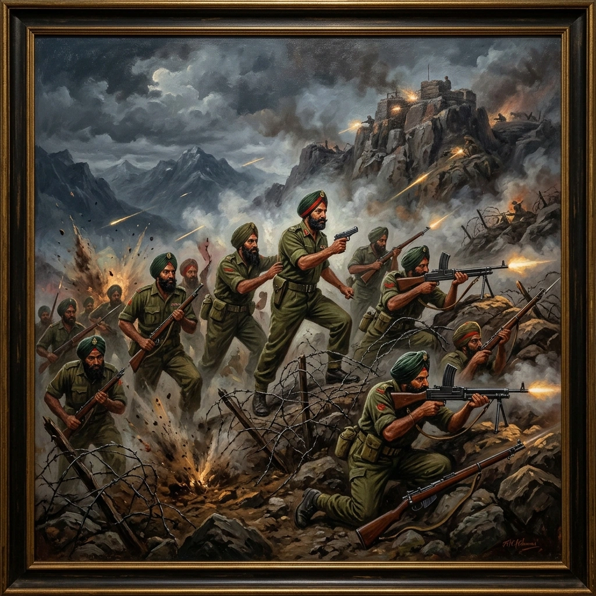

ਜੰਮੂ ਅਤੇ ਕਸ਼ਮੀਰ ਵਿੱਚ ਲੜਾਈ


ਸਿਰਲੇਖ: Fighting in Jammu and Kashmir
ਸ਼੍ਰੇਣੀ: Fighting in Jammu and Kashmir
ਕਲਾਕਾਰ: ਸਿੱਖ ਰੈਜੀਮੈਂਟal Centre
ਸਾਲ: ਇਤਿਹਾਸਕ
ਸ਼੍ਰੇਣੀ: Fighting in Jammu and Kashmir
ਕਲਾਕਾਰ: ਸਿੱਖ ਰੈਜੀਮੈਂਟal Centre
ਸਾਲ: ਇਤਿਹਾਸਕ
ਜੰਮੂ ਅਤੇ ਕਸ਼ਮੀਰ ਵਿੱਚ ਲੜਾਈ
ਤਿੱਥਵਾਲ ਸੈਕਟਰ ਵਿੱਚ, 1 ਸਿੱਖ ਨੂੰ 24-25 ਅਗਸਤ ਨੂੰ ਰਿਚਮਾਰ ਗਲੀ ਰਿਜ 'ਤੇ ਪੰਜ ਚੌਕੀਆਂ 'ਤੇ ਕਬਜ਼ਾ ਕਰਨ ਦਾ ਹੁਕਮ ਦਿੱਤਾ ਗਿਆ ਸੀ। ਡੈਲਟਾ ਅਤੇ ਚਾਰਲੀ ਕੰਪਨੀਆਂ ਨੇ ਲਿਸਨਿੰਗ ਪੋਸਟ ਅਤੇ ਪੀਟੀ ਗਰਾਊਂਡ 'ਤੇ ਕਬਜ਼ਾ ਕਰ ਲਿਆ, ਜਦੋਂ ਕਿ ਹੋਰ ਹਮਲਿਆਂ ਨੇ ਪੀਰ ਸਾਹਿਬਾ ਅਤੇ ਆਸਪਾਸ ਦੀਆਂ ਸਥਿਤੀਆਂ ਨੂੰ ਸਾਫ਼ ਕਰ ਦਿੱਤਾ। ਮੇਜਰ ਸੋਮੇਸ਼ ਕਪੂਰ ਅਤੇ ਹੌਲਦਾਰ ਗੁਰਦੇਵ ਸਿੰਘ ਨੂੰ ਵੀਰ ਚੱਕਰ ਮਿਲਿਆ; ਗੁਰਦੇਵ ਸਿੰਘ ਆਪਣੀ ਫਟੀ ਹੋਈ ਪੱਗ ਨੂੰ ਗੁਲੇਲ ਵਾਂਗ ਵਰਤ ਕੇ ਲੜਦਾ ਰਿਹਾ। ਸਿਪਾਹੀ ਗੁਰਮੇਲ ਸਿੰਘ, ਜਿਸ ਨੇ ਦੁਸ਼ਮਣ ਦੀ ਮਸ਼ੀਨ ਗੰਨ ਚਲਾਈ, ਨੂੰ ਮਰਨ ਉਪਰੰਤ ਵੀਰ ਚੱਕਰ ਪ੍ਰਾਪਤ ਕੀਤਾ। ਬਟਾਲੀਅਨ ਨੇ ਤਿੰਨ ਵੀਰ ਚੱਕਰ, ਤਿੰਨ ਸੈਨਾ ਮੈਡਲ ਅਤੇ ਚਾਰ ਮੇਨਸ਼ਨ-ਇਨ-ਡੈਸਪੈਚ ਹਾਸਲ ਕੀਤੇ। ਲੈਫਟੀਨੈਂਟ ਕਰਨਲ ਗੁਲਚਰਨ ਸਿੰਘ ਦੇ ਅਧੀਨ, 3 ਸਿੱਖਾਂ ਨੇ ਉੱਤਰੀ ਗਲੀਜ਼ ਵਿੱਚ ਵਿਆਪਕ ਤੌਰ 'ਤੇ ਵੱਖ ਕੀਤੀਆਂ ਪੋਸਟਾਂ ਦੀ ਰੱਖਿਆ ਕੀਤੀ। ਫਰਕੀਆਂ-ਕੀ-ਗਲੀ ਵਿਖੇ ਸੂਬੇਦਾਰ ਸੁੰਦਰ ਸਿੰਘ ਦੀ ਛੋਟੀ ਫੋਰਸ ਨੇ ਵਾਰ-ਵਾਰ ਹਮਲਿਆਂ ਨੂੰ ਹਰਾਇਆ, ਜਦੋਂ ਕਿ 15 ਅਕਤੂਬਰ ਤੱਕ ਪੂਰੇ ਕੀਤੇ ਗਏ ਅਪਰੇਸ਼ਨਾਂ ਨੇ ਮੀਰਪੁਰ-ਬੁਗੀਨਾ ਬਲਜ ਨੂੰ ਸਾਫ਼ ਕਰ ਦਿੱਤਾ ਅਤੇ ਮੁਜ਼ੱਫਰਾਬਾਦ-ਕੇਲ ਮਾਰਗ 'ਤੇ ਕੰਟਰੋਲ ਸਥਾਪਿਤ ਕਰ ਲਿਆ। ਮੇਜਰ ਜੇਸੀ ਜੋਸ਼ੀ ਦੀ ਅਗਵਾਈ ਵਿੱਚ 17 ਸਿੱਖਾਂ ਦੀ ਐਡਵਾਂਸ ਪਾਰਟੀ ਨੂੰ ਆਸਲ ਉੱਤਰ ਵਿਖੇ ਰੱਖਿਆ ਨੂੰ ਮਜ਼ਬੂਤ ਕਰਨ ਲਈ ਅੰਬਾਲਾ ਤੋਂ ਰਵਾਨਾ ਕੀਤਾ ਗਿਆ। ਸਭ ਤੋਂ ਮਹਿੰਗੀ ਕਾਰਵਾਈ 2 ਸਿੱਖਾਂ ਨੂੰ ਪਈ। ਜੌਰੀਅਨ ਦੇ ਨੇੜੇ ਅੱਠ ਉਦੇਸ਼ਾਂ ਨੂੰ ਹਾਸਲ ਕਰਨ ਤੋਂ ਬਾਅਦ, ਇਹ 29 ਅਗਸਤ ਨੂੰ ਆਪ੍ਰੇਸ਼ਨ ਫੌਲਦ ਅਤੇ ਰਾਜਾ ਪਿਕਕੇਟ ਨੂੰ ਫੜਨ ਲਈ ਪੰਚ ਵੱਲ ਚਲਾ ਗਿਆ। ਲੈਫਟੀਨੈਂਟ ਕਰਨਲ ਐਨ.ਐਨ. ਖੰਨਾ ਨੇ ਅਲਫ਼ਾ, ਬ੍ਰਾਵੋ ਅਤੇ ਡੈਲਟਾ ਕੰਪਨੀਆਂ ਨੂੰ ਖਾਣਾਂ, ਤਾਰ ਅਤੇ ਕੇਂਦਰਿਤ ਅੱਗ ਰਾਹੀਂ ਅਗਵਾਈ ਕੀਤੀ। ਸੀਨੀਅਰ ਕਮਾਂਡਰਾਂ ਦੇ ਮਾਰੇ ਜਾਣ ਤੋਂ ਬਾਅਦ ਜੂਨੀਅਰ ਨੇਤਾਵਾਂ ਨੇ ਹਮਲਾ ਜਾਰੀ ਰੱਖਿਆ, ਅਤੇ ਰਾਜਾ ਨੂੰ 0900 ਵਜੇ ਸੁਰੱਖਿਅਤ ਕਰ ਲਿਆ ਗਿਆ। ਖੰਨਾ ਇਹ ਪੁੱਛਦੇ ਹੋਏ ਮਰ ਗਏ ਕਿ ਕੀ ਉਦੇਸ਼ ਡਿੱਗ ਗਿਆ ਸੀ ਅਤੇ ਮਰਨ ਉਪਰੰਤ ਮਹਾਂਵੀਰ ਚੱਕਰ ਪ੍ਰਾਪਤ ਕੀਤਾ ਸੀ। ਨਾਇਕ ਚੰਦ ਸਿੰਘ ਨੂੰ ਵੀਰ ਚੱਕਰ ਮਿਲਿਆ। ਬਟਾਲੀਅਨ ਨੇ ਬੈਟਲ ਆਨਰ "ਰਾਜਾ" ਅਤੇ ਥੀਏਟਰ ਆਨਰ "ਜੰਮੂ ਅਤੇ ਕਸ਼ਮੀਰ 1965" ਪ੍ਰਾਪਤ ਕੀਤਾ।
ਤਿੱਥਵਾਲ ਸੈਕਟਰ ਵਿੱਚ, 1 ਸਿੱਖ ਨੂੰ 24-25 ਅਗਸਤ ਨੂੰ ਰਿਚਮਾਰ ਗਲੀ ਰਿਜ 'ਤੇ ਪੰਜ ਚੌਕੀਆਂ 'ਤੇ ਕਬਜ਼ਾ ਕਰਨ ਦਾ ਹੁਕਮ ਦਿੱਤਾ ਗਿਆ ਸੀ। ਡੈਲਟਾ ਅਤੇ ਚਾਰਲੀ ਕੰਪਨੀਆਂ ਨੇ ਲਿਸਨਿੰਗ ਪੋਸਟ ਅਤੇ ਪੀਟੀ ਗਰਾਊਂਡ 'ਤੇ ਕਬਜ਼ਾ ਕਰ ਲਿਆ, ਜਦੋਂ ਕਿ ਹੋਰ ਹਮਲਿਆਂ ਨੇ ਪੀਰ ਸਾਹਿਬਾ ਅਤੇ ਆਸਪਾਸ ਦੀਆਂ ਸਥਿਤੀਆਂ ਨੂੰ ਸਾਫ਼ ਕਰ ਦਿੱਤਾ। ਮੇਜਰ ਸੋਮੇਸ਼ ਕਪੂਰ ਅਤੇ ਹੌਲਦਾਰ ਗੁਰਦੇਵ ਸਿੰਘ ਨੂੰ ਵੀਰ ਚੱਕਰ ਮਿਲਿਆ; ਗੁਰਦੇਵ ਸਿੰਘ ਆਪਣੀ ਫਟੀ ਹੋਈ ਪੱਗ ਨੂੰ ਗੁਲੇਲ ਵਾਂਗ ਵਰਤ ਕੇ ਲੜਦਾ ਰਿਹਾ। ਸਿਪਾਹੀ ਗੁਰਮੇਲ ਸਿੰਘ, ਜਿਸ ਨੇ ਦੁਸ਼ਮਣ ਦੀ ਮਸ਼ੀਨ ਗੰਨ ਚਲਾਈ, ਨੂੰ ਮਰਨ ਉਪਰੰਤ ਵੀਰ ਚੱਕਰ ਪ੍ਰਾਪਤ ਕੀਤਾ। ਬਟਾਲੀਅਨ ਨੇ ਤਿੰਨ ਵੀਰ ਚੱਕਰ, ਤਿੰਨ ਸੈਨਾ ਮੈਡਲ ਅਤੇ ਚਾਰ ਮੇਨਸ਼ਨ-ਇਨ-ਡੈਸਪੈਚ ਹਾਸਲ ਕੀਤੇ। ਲੈਫਟੀਨੈਂਟ ਕਰਨਲ ਗੁਲਚਰਨ ਸਿੰਘ ਦੇ ਅਧੀਨ, 3 ਸਿੱਖਾਂ ਨੇ ਉੱਤਰੀ ਗਲੀਜ਼ ਵਿੱਚ ਵਿਆਪਕ ਤੌਰ 'ਤੇ ਵੱਖ ਕੀਤੀਆਂ ਪੋਸਟਾਂ ਦੀ ਰੱਖਿਆ ਕੀਤੀ। ਫਰਕੀਆਂ-ਕੀ-ਗਲੀ ਵਿਖੇ ਸੂਬੇਦਾਰ ਸੁੰਦਰ ਸਿੰਘ ਦੀ ਛੋਟੀ ਫੋਰਸ ਨੇ ਵਾਰ-ਵਾਰ ਹਮਲਿਆਂ ਨੂੰ ਹਰਾਇਆ, ਜਦੋਂ ਕਿ 15 ਅਕਤੂਬਰ ਤੱਕ ਪੂਰੇ ਕੀਤੇ ਗਏ ਅਪਰੇਸ਼ਨਾਂ ਨੇ ਮੀਰਪੁਰ-ਬੁਗੀਨਾ ਬਲਜ ਨੂੰ ਸਾਫ਼ ਕਰ ਦਿੱਤਾ ਅਤੇ ਮੁਜ਼ੱਫਰਾਬਾਦ-ਕੇਲ ਮਾਰਗ 'ਤੇ ਕੰਟਰੋਲ ਸਥਾਪਿਤ ਕਰ ਲਿਆ। ਮੇਜਰ ਜੇਸੀ ਜੋਸ਼ੀ ਦੀ ਅਗਵਾਈ ਵਿੱਚ 17 ਸਿੱਖਾਂ ਦੀ ਐਡਵਾਂਸ ਪਾਰਟੀ ਨੂੰ ਆਸਲ ਉੱਤਰ ਵਿਖੇ ਰੱਖਿਆ ਨੂੰ ਮਜ਼ਬੂਤ ਕਰਨ ਲਈ ਅੰਬਾਲਾ ਤੋਂ ਰਵਾਨਾ ਕੀਤਾ ਗਿਆ। ਸਭ ਤੋਂ ਮਹਿੰਗੀ ਕਾਰਵਾਈ 2 ਸਿੱਖਾਂ ਨੂੰ ਪਈ। ਜੌਰੀਅਨ ਦੇ ਨੇੜੇ ਅੱਠ ਉਦੇਸ਼ਾਂ ਨੂੰ ਹਾਸਲ ਕਰਨ ਤੋਂ ਬਾਅਦ, ਇਹ 29 ਅਗਸਤ ਨੂੰ ਆਪ੍ਰੇਸ਼ਨ ਫੌਲਦ ਅਤੇ ਰਾਜਾ ਪਿਕਕੇਟ ਨੂੰ ਫੜਨ ਲਈ ਪੰਚ ਵੱਲ ਚਲਾ ਗਿਆ। ਲੈਫਟੀਨੈਂਟ ਕਰਨਲ ਐਨ.ਐਨ. ਖੰਨਾ ਨੇ ਅਲਫ਼ਾ, ਬ੍ਰਾਵੋ ਅਤੇ ਡੈਲਟਾ ਕੰਪਨੀਆਂ ਨੂੰ ਖਾਣਾਂ, ਤਾਰ ਅਤੇ ਕੇਂਦਰਿਤ ਅੱਗ ਰਾਹੀਂ ਅਗਵਾਈ ਕੀਤੀ। ਸੀਨੀਅਰ ਕਮਾਂਡਰਾਂ ਦੇ ਮਾਰੇ ਜਾਣ ਤੋਂ ਬਾਅਦ ਜੂਨੀਅਰ ਨੇਤਾਵਾਂ ਨੇ ਹਮਲਾ ਜਾਰੀ ਰੱਖਿਆ, ਅਤੇ ਰਾਜਾ ਨੂੰ 0900 ਵਜੇ ਸੁਰੱਖਿਅਤ ਕਰ ਲਿਆ ਗਿਆ। ਖੰਨਾ ਇਹ ਪੁੱਛਦੇ ਹੋਏ ਮਰ ਗਏ ਕਿ ਕੀ ਉਦੇਸ਼ ਡਿੱਗ ਗਿਆ ਸੀ ਅਤੇ ਮਰਨ ਉਪਰੰਤ ਮਹਾਂਵੀਰ ਚੱਕਰ ਪ੍ਰਾਪਤ ਕੀਤਾ ਸੀ। ਨਾਇਕ ਚੰਦ ਸਿੰਘ ਨੂੰ ਵੀਰ ਚੱਕਰ ਮਿਲਿਆ। ਬਟਾਲੀਅਨ ਨੇ ਬੈਟਲ ਆਨਰ "ਰਾਜਾ" ਅਤੇ ਥੀਏਟਰ ਆਨਰ "ਜੰਮੂ ਅਤੇ ਕਸ਼ਮੀਰ 1965" ਪ੍ਰਾਪਤ ਕੀਤਾ।
ਮੋਬਾਈਲ 'ਤੇ ਖੋਲ੍ਹੋ
ਆਪਣੇ ਫ਼ੋਨ 'ਤੇ ਇਸ ਕਲਾ ਰਿਕਾਰਡ ਨੂੰ ਦੇਖਣ ਲਈ ਸਕੈਨ ਕਰੋ।